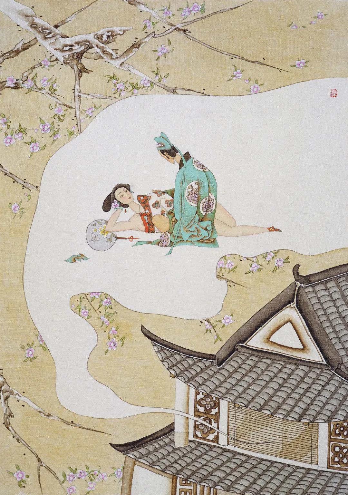

第七十一回 李瓶儿何家托梦 提刑官引奏朝仪
第七十一回 李瓶儿何家托梦 提刑官引奏朝仪#
词曰：
花事阑珊芳草歇，客里风光，又过些时节。小院黄昏人忆别，泪痕点点成红血。
咫尺江山分楚越，目断神惊，只道芳魂绝。梦破五更心欲折，角声吹落梅花月。
话说西门庆同何千户回来，走到大街，何千户就邀请西门庆到家一饭。西门庆再三固辞。何千户令手下把马环拉住，说道：“学生还有一事与长官商议。”于是并辔同到宅前下马。贲四同抬盒迳往崔中书家去了。原来何千户盛陈酒筵在家等候。进入厅上，但见兽炭焚烧，金炉香霭。正中独设一席，下边一席相陪，旁边东首又设一席。皆盘堆异果，花插金瓶。西门庆问道：“长官今日筵何客？”何千户道：“家公公今日下班，敢屈长官一饭。”西门庆道：“长官这等费心，就不是同僚之情。”何千户道：“家公公粗酌屈尊，长官休怪。”一面看茶吃了。西门庆请老公公拜见，何千户道：“家公公便出来。”
不一时，何太监从后边出来，穿着绿绒蟒衣，冠帽皂鞋，宝石绦环。西门庆展拜四拜：“请公公受礼。”何大监不肯，说道：“使不的。”西门庆道：“学生与天泉同寅晚辈，老公公齿德俱尊，又系中贵，自然该受礼。”讲了半日，何大监受了半礼，让西门庆上坐，他主席相陪，何千户旁坐。西门庆道：“老公公，这个断然使不得。同僚之间，岂可旁坐！老公公叔侄便罢了，学生使不的。”何太监大喜道：“大人甚是知礼，罢罢，我阁老位儿旁坐罢，教做官的陪大人就是了。”西门庆道：“这等，学生坐的也安。”于是各照位坐下。何太监道：“小的儿们，再烧了炭来。今日天气甚是寒冷。”须臾，左右火池火叉，拿上一包水磨细炭，向火盆内只一倒。厅前放下油纸暖帘来，日光掩映，十分明亮。何太监道：“大人请宽了盛服罢。”西门庆道：“学生里边没穿甚么衣服，使小价下处取来。”何太监道：“不消取去。”令左右接了衣服，“拿我穿的飞鱼绿绒氅衣来，与大人披上。”西门庆笑道：“老先生职事之服，学生何以穿得？”何太监道：“大人只顾穿，怕怎的！昨日万岁赐了我蟒衣，我也不穿他了，就送了大人遮衣服儿罢。”不一时，左右取上来，西门庆令玳安接去员领，披上氅衣，作揖谢了。又请何千户也宽去上盖陪坐。
又拿上一道茶来吃了，何太监道：“叫小厮们来。”原来家中教了十二名吹打的小厮，两个师范领着上来磕头。何太监就吩咐动起乐来，然后递酒上坐。何太监亲自把盏，西门庆慌道：“老公公请尊便。有长官代劳，只安放钟箸儿就是一般。”何太监道：“我与大人递一钟儿。我家做官的初入芦苇，不知深浅，望乞大人凡事扶持一二，就是情了。”西门庆道：“老公公说那里话！常言：同僚三世亲。学生亦托赖老公公余光，岂不同力相助！”何太监道：“好说，好说。共同王事，彼此扶持。”西门庆也没等他递酒，只接了杯儿，领到席上，随即回奉一杯，安在何千户并何太监席上，彼此告揖过，坐下。吹打毕，三个小厮连师范，在筵前银筝象板，三弦琵琶，唱了一套《正宫·端正好》“雪夜访赵普”、“水晶宫鲛绡帐”。唱毕下去。
酒过数巡，食割两道，看看天晚，秉上灯来。西门庆唤玳安拿赏赐与厨役并吹打各色人役，就起身，说道：“学生厚扰一日了，就此告回。”那公公那里肯放，说道：“我今日正下班，要与大人请教。有甚大酒席，只是清坐而已，教大人受饥。”西门庆道：“承老公公赐这等美馔，如何反言受饥！学生回去歇息歇息，明早还要与天泉参谒参谒兵科，好领札付挂号。”何太监道：“既是大人要与我家做官的同干事，何不令人把行李搬过来我家住两日？我这后园儿里有几间小房儿，甚是僻静，就早晚和做官的理会些公事儿也方便些，强如在别人家。”西门庆道：“在这里最好，只是使夏公见怪，相学生疏他一般。”何太监道：“没的说。如今时年，早晨不做官，晚夕不唱喏，衙门是恁偶戏衙门。虽故当初与他同僚，今日前官已去，后官接管承行，与他就无干。他若这等说，他就是个不知道理的人了。今日我定要和大人坐一夜，不放大人去。”唤左右：“下边房里快放桌儿，管待你西门老爹大官儿饭酒。我家差几个人，跟他即时把行李都搬了来。”又吩咐：“打扫后花园西院干净，预备铺陈，炕中笼下炭火。”堂上一呼，阶下百诺，答应下去了。西门庆道：“老公公盛情，只是学生得罪夏公了。”何太监道：“他既出了衙门，不在其位，不谋其政。他管他那銮驾库的事，管不的咱提刑所的事了。难怪于你。”不由分说，就打发玳安并马上人吃了酒饭，差了几名军牢，各拿绳扛，迳往崔中书家搬取行李去了。
何太监道：“又一件相烦大人：我家做官的到任所，还望大人替他看所宅舍儿，好搬取家小。今先教他同大人去，待寻下宅子，然后打发家小起身。也不多，连几房家人也只有二三十口。”西门庆道：“老公公吩咐，要看多少银子宅舍？”何太监道：“也得千金外房儿才够住。”西门庆道：“夏龙溪他京任不去了，他一所房子倒要打发，老公公何不要了与天泉住，一举两得其便。此宅门面七间，到底五层，仪门进去大厅，两边厢房，鹿角顶，后边住房、花亭，周围群房也有许多，街道又宽阔，正好天泉住。”何太监道：“他要许多价值儿？”西门庆道：“他对我说原是一千三百两，又后边添盖了一层平房，收拾了一处花亭。老公公若要，随公公与他多少罢了。”何太监道：“我托大人，随大人主张就是了。趁今日我在家，差个人和他说去，讨他那原文书我瞧瞧。难得寻下这房舍儿，我家做官的去到那里，就有个归着了。”
不一时，只见玳安同众人搬了行李来回话。西门庆问：“贲四、王经来了不曾？”玳安道：“王经同押了衣箱行李先来了。还有轿子，叫贲四在那里看守着哩。”西门庆因附耳低言：“如此这般上覆夏老爹，借过那里房子的原契来，何公公要瞧瞧。就同贲四一答儿来。”这玳安应的去了。不一时，贲四青衣小帽，同玳安拿文书回西门庆说：“夏老爹多多上覆：既是何公公要，怎好说价钱！原文书都拿的来了。又收拾添盖，使费了许多，随爹主张了罢。”西门庆把原契递与何太监亲看了一遍，见上面写着一千二百两，说道：“这房儿想必也住了几年，未免有些糟烂，也别要说收拾，大人面上还与他原价。”那贲四连忙跪下说：“何爷说的是。自古道：使的憨钱，治的庄田。千年房舍换百主，一番拆洗一番新。”何太监听了喜欢道：“你是那里人？倒会说话儿。常言成大事者不惜小费，其实说的是。他教甚么名字？”西门庆道：“他名唤贲四。”何太监道：“也罢，没个中人儿，你就做个中人儿，替我讨了文书来。今日是个好日期，就把银子兑与他罢。”西门庆道：“如今晚了，待的明日也罢了。”何太监道：“到五更我早进去，明日大朝。今日不如先交与他银子，就了事。”西门庆问道：“明日甚时驾出？”何太监道：“子时驾出到坛，三更鼓祭了，寅正一刻就回宫。摆了膳，就出来设朝，升大殿，朝贺天下，诸司都上表拜冬。次日，文武百官吃庆成宴。你每是外任官，大朝引奏过就没事了。”说毕，何太监吩咐何千户进后边，打点出二十四锭大元宝来，用食盒抬着，差了两个家人，同贲四、玳安押送到崔中书家交割。夏公见抬了银子来，满心欢喜，随即亲手写了文契，付与贲四等，拿来递上。何太监不胜欢喜，赏了贲四十两银子，玳安、王经每人三两。西门庆道：“小孩子家，不当赏他。”何太监道：“胡乱与他买嘴儿吃。”三人磕头谢了。何太监吩咐管待酒饭，又向西门庆唱了两个喏：“全仗大人余光。”西门庆道：“还是看老公公金面。”何太监道：“还望大人对他说说，早把房儿腾出来，就好打发家小起身。”西门庆道：“学生一定与他说，教他早腾。长官这一去，且在衙门公廨中权住几日。待他家小搬到京，收拾了，长官宝眷起身不迟。”何太监道：“收拾直待过年罢了，先打发家小去才好。十分在衙门中也不方便。”
说话之间，已有一更天气，西门庆说道：“老公公请安置罢！学生亦不胜酒力了。”何大监方作辞归后边歇息去了。何千户教家乐弹唱，还与西门庆吃了一回，方才起身，送至后园。三间书院，台榭湖山，盆景花木，房内绛烛高烧，篆内香焚麝饼，十分幽雅。何千户陪西门庆叙话，又看茶吃了，方道安置，归后边去了。
西门庆摘去冠带，解衣就寝。王经、玳安打发了，就往下边暖炕上歇去了。西门庆有酒的人，睡在枕畔，见满窗月色，翻来复去。良久只闻夜漏沉沉，花阴寂寂，寒风吹得那窗纸有声，况离家已久。正要呼王经进来陪他睡，忽听得窗外有妇人语声甚低，即披衣下床，趿着鞋袜，悄悄启户视之。只见李瓶儿雾髩云鬟，淡妆丽雅，素白旧衫笼雪体，淡黄软袜衬弓鞋，轻移莲步，立于月下。西门庆一见，挽之入室，相抱而哭，说道：“冤家，你如何在这里？”李瓶儿道：“奴寻访至此。对你说，我已寻了房儿了，今特来见你一面，早晚便搬去了。”西门庆忙问道：“你房儿在于何处？”李瓶儿道：“咫尺不远。出此大街迤东，造釜巷中间便是。”言讫，西门庆共他相偎相抱，上床云雨，不胜美快之极。已而整衣扶髻，徘徊不舍。李瓶儿叮咛嘱咐西门庆道：“我的哥哥，切记休贪夜饮，早早回家。那厮不时伺害于你，千万勿忘！”言讫，挽西门庆相送。走出大街上，见月色如昼，果然往东转过牌坊，到一小巷，见一座双扇白板门，指道：“此奴之家也。”言毕，顿袖而入。西门庆急向前拉之，恍然惊觉，乃是南柯一梦。但见月影横窗，花枝倒影矣。西门庆向褥底摸了摸，见精流满席，余香在被，残唾犹甜。追悼莫及，悲不自胜。正是：
玉宇微茫霜满襟，疏窗淡月梦魂惊。凄凉睡到无聊处，恨杀寒鸡不肯鸣。

西门庆梦醒睡不着，巴不得天亮。比及天亮，又睡着了。次日早，何千户家童仆起来伺候，打发西门庆梳洗毕，何千户又早出来陪侍，吃了姜茶，放桌儿请吃粥。西门庆问：“老公公怎的不见？”何千户道：“家公公从五更就进内去了。”须臾拿上粥来。吃了粥，又拿上一盏肉圆子馄饨鸡蛋头脑汤。一面吃着，就吩咐备马。何千户与西门庆冠冕，仆从跟随，早进内参见兵科。出来，何千户便分路来家，西门庆又到相国寺拜智云长老。长老又留摆斋。西门庆只吃了一个点心，余者收与手下人吃了，就起身从东街穿过来，要往崔中书家拜夏龙溪去。因从造釜巷所过，中间果见有双扇白板门，与梦中所见一般。悄悄使玳安问隔壁卖豆腐老姬：“此家姓甚名谁？”老姬答道：“此袁指挥家也。”西门庆于是不胜叹异。到了崔中书家，夏公才待出门拜人，见西门庆到，忙令左右把马牵过，迎至厅上，拜揖叙礼。西门庆令玳安拿上贺礼：青织金绫紵一端、色缎一端。夏公道：“学生还不曾拜贺长官，到承长官先施。昨日小房又烦费心，感谢不尽。”西门庆道：“昨日何太监说起看房，我因堂尊分上，就说此房来。何公讨了房契去看了，一口就还原价。果是内臣性儿，立马盖桥就成了。还是堂尊大福！”说毕，二人笑了。夏公道：“何天泉，我也还未回拜他。”因问：“他此去与长官同行罢了。”西门庆道：“他已会定同学生一路去，家小且待后。昨日他老公公多致意，烦堂尊早些把房儿腾出来，搬取家眷。他如今权在衙门里住几日罢了。”夏公道：“学生也不肯久稽，待这里寻了房儿，就使人搬取家小。也只待出月罢了。”说毕，西门庆起身，又留了个拜帖与崔中书，夏公送出上马，归至何千户家。何千户又早有午饭等候。西门庆悉把拜夏公之事说了一遍：“腾房已在出月。”何千户大喜，谢道：“足见长官盛情。”
吃毕饭，二人正在厅上着棋，忽左右来报：“府里翟爹差人送下程来了。抓寻到崔老爹那里，崔老爹使他这里来了。”于是拿帖看，上写着：“谨具金缎一端、云紵一端、鲜猪一口、北羊一腔、内酒一坛、点心二盒。眷生翟谦顿首拜。”西门庆见来人，说道：“又蒙你翟爹费心。”一面收了礼物，写回帖，赏来人二两银子，抬盒人五钱，说道：“客中不便，有亵管家。”那人磕头收了。王经在旁悄悄说：“小的姐姐说，教我府里去看看爱姐，有物事捎与他。”西门庆问：“甚物事？”王经道：“是家中做的两双鞋脚手。”西门庆道：“单单儿怎好拿去？”吩咐玳安：“我皮箱内有带的玫瑰花饼，取两罐儿。”就把口帖付与王经，穿上青衣，跟了来人往府里看爱姐不题。这西门庆写了帖儿，送了一腔羊、一坛酒谢了崔中书，把一口猪、一坛酒、两盒点心抬到后边孝顺老公公。何千户拜谢道：“长官，你我一家，如何这等计较！”
且说王经到府内，请出韩爱姐，外厅拜见了。打扮的如琼林玉树一般，比在家出落自是不同，长大了好些。问了回家中事务，管待了酒饭，见王经身上单薄，与了一件天青紵丝貂鼠氅衣儿，又与了五两银子，拿来回覆西门庆话。西门庆大喜。正与何千户下棋，忽闻绰道之声，门上人来报：“夏老爹来拜，拿进两个拜帖儿。”两个忙迎接到厅叙礼，何千户又谢昨日房子之事。夏公具了两分缎帕酒礼，奉贺二公。西门庆与何千户再三致谢，令左右收了。夏公又赏了贲四、玳安、王经十两银子，一面分宾主坐下。茶罢，共叙寒温。夏公道：“请老公公拜见。”何千户道：“家公公进内去了。”夏公又留下了一个双红拜帖儿，说道：“多顶上老公公，拜迟，恕罪！”言毕，起身去了。何千户随即也具一分贺礼，一匹金缎，差人送去，不在言表。
到晚夕，何千户又在花园暖阁中摆酒与西门庆共酌，家乐歌唱，到二更方寝。西门庆因昨日梦遗之事，晚夕令王经拿铺盖来书房地平上睡。半夜叫上床，搂在被窝内。两个口吐丁香，舌融甜唾。正是：
不能得与莺莺会，且把红娘去解馋。
一晚题过。到次日，起五更与何千户一行人跟随进朝。先到待漏院伺候，等的开了东华门进入。但见：
星斗依稀禁漏残，禁中环佩响珊珊。欲知今日天颜喜，遥睹蓬莱紫气皤。
少顷，只听九重门启，鸣哕哕之鸾声；阊阖天开，睹巍巍之衮冕。当时天子祀毕南郊回来，文武百官聚集，等候设朝。须臾钟响，天子驾出大殿，受百官朝贺。须臾，香球拨转，帘卷扇开。正是：
晴日明开青锁闼，天风吹下御炉香。千条瑞霭浮金阙，一朵红云捧玉皇。
这皇帝生得尧眉舜目，禹背汤肩，才俊过人，口工诗韵，善写墨君竹，能挥薛稷书，通三教之书，晓九流之典。朝欢暮乐，依稀似剑阁孟商王；爱色贪花，仿佛如金陵陈后主。当下驾坐宝位，静鞭响罢，文武百官秉简当胸，向丹墀五拜三叩头，进上表章。已而有殿头官口传圣旨道：“朕今即位二十祀矣。艮岳于兹告成，上天降瑞，今值覆端之庆，与卿共之。”言未毕，班首中闪过一员大臣来，朝靴踏地响，袍袖列风生。视之，乃左丞相崇政殿大学士兼吏部尚书太师鲁国公蔡京也。幞头象简，俯伏金阶，口称：“万岁，万岁，万万岁！臣等诚惶诚恐，稽首顿首，恭惟皇上御极二十祀以来，海宇清宁，天下丰稔，上天降鉴，祯祥叠见。三边永息兵戈，万国来朝天阙。银岳排空，玉京挺秀。宝箓膺颁于昊阙，绛宵深耸于乾宫。臣等何幸，欣逢盛世，交际明良，永效华封之祝，常沾日月之光。不胜瞻天仰圣，激切屏营之至！谨献颂以闻。”良久，圣旨下来：“贤卿献颂，益见忠诚，朕心嘉悦。诏改明年为重和元年，正月元旦受定命宝，肄赦覃赏有差。”蔡大师承旨下来。殿头官口传圣旨：“有事出班早奏，无事卷帘退朝。”言未毕，见一人出离班部，倒笏躬身，绯袍象简，玉带金鱼，跪在金阶，口称：“光禄大夫掌金吾卫事太尉太保兼太子太保臣朱勔，引天下提刑官员章隆等二十六员，例该考察，已更改补、缴换札付，合当引奏。未敢擅便，请旨定夺。”于是二十六员提刑官都跪在后面。不一时，圣旨传下来：“照例给领。”朱太尉承旨下来。天子袍袖一展，群臣皆散，驾即回宫。百官皆从端礼门两分而出。那十二象不待牵而先走，镇将长随纷纷而散。朝门外车马纵横，侍仗罗列。人喧呼，海沸波翻；马嘶喊，山崩地裂。众提刑官皆出朝上马，都来本衙门伺候。良久，只见知印拿了印牌来，传道：“老爷不进衙门了，已往蔡爷、李爷宅内拜冬去了。”以此众官都散了。
西门庆与何千户回到家中。又过了一夕，到次日，衙门中领了札付，又挂了号，又拜辞了翟管家，打点残装，收拾行李，与何千户一同起身。何太监晚夕置酒饯行，嘱咐何千户：“凡事请教西门大人，休要自专，差了礼数。”从十一月二十日东京起身，两家也有二十人跟随，竟往山东大道而来。已是数九严寒之际，点水滴冻之时，一路上见了些荒郊野路，枯木寒鸦。疏林淡日影斜晖，暮雪冻云迷晚渡。一山未尽一山来，后村已过前村望。比及刚过黄河，到水关八角镇，骤然撞遇天起一阵大风。但见：
非干虎啸，岂是龙吟？卒律律寒飙扑面，急飕飕冷气侵人。初时节无踪无影，次后来卷雾收云。吹花摆柳白茫茫，走石扬砂昏惨惨。刮得那大树连声吼，惊得那孤雁落深濠。须臾，砂石打地，尘土遮天。砂石打地，犹如满天骤雨即时来；尘土遮天，好似百万貔貅卷土至。这风大不大？真个是吹折地狱门前树，乱起酆都顶上尘；常娥急把蟾官闭，列子空中叫救人。险些儿玉皇住不得昆仑顶，只刮得大地乾坤上下摇。
西门庆与何千户坐着两顶毡帏暖轿，被风刮得寸步难行。又见天色渐晚，恐深林中撞出小人来，西门庆吩咐手下：“快寻那里安歇一夜，明日风住再行罢。”抓寻了半日，远远望见路旁一座古刹，数株疏柳，半堵横墙。但见：
石砌碑横梦草遮，回廊古殿半欹斜。夜深宿客无灯火，月落安禅更可嗟。
西门庆与何千户忙入寺中投宿，上题着“黄龙寺”。见方丈内几个僧人在那里坐禅，又无灯火，房舍都毁坏，半用篱遮。长老出来问讯，旋吹火煮茶，伐草根喂马。煮出茶来，西门庆行囊中带得干鸡腊肉果饼之类，晚夕与何千户胡乱食得一顿。长老爨一锅豆粥吃了，过得一宿。次日风止天晴，与了和尚一两银子相谢，作辞起身往山东来。正是：
王事驱驰岂惮劳，关山迢递赴京朝。夜投古寺无烟火，解使行人心内焦。